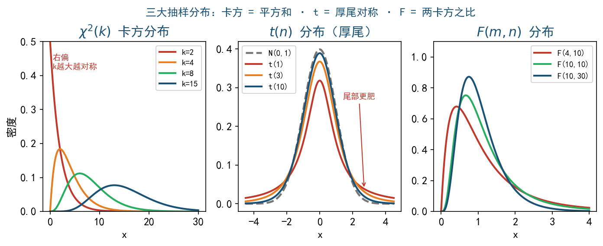
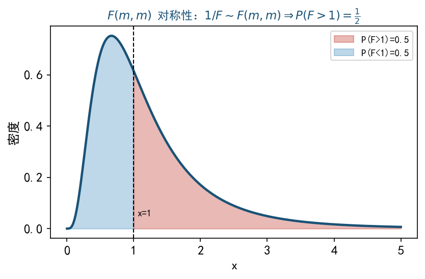

$X_1, \ldots, X_n$ i.i.d. $\sim N(0, 1)$，则
$$\sum_{i=1}^n X_i^2\sim\chi^2(n)$$自由度 $n$ 的卡方分布。
密度（不要求记）：$f(x) = \dfrac{1}{2^{n/2}\Gamma(n/2)}x^{n/2-1}e^{-x/2},\ x > 0$

$X\sim N(0, 1),\,Y\sim\chi^2(n)$ 独立，则
$$T = \dfrac{X}{\sqrt{Y/n}}\sim t(n)$$$U\sim\chi^2(m),\ V\sim\chi^2(n)$ 独立，则
$$F = \dfrac{U/m}{V/n}\sim F(m, n)$$$m$ 是分子自由度，$n$ 是分母自由度。
区别自由度：$\sum(X_i-\bar X)^2/\sigma^2\sim\chi^2(n-1)$；$\sum(X_i-\mu)^2/\sigma^2\sim\chi^2(n)$。多 / 少 1 个自由度的关键是"用 $\bar X$ 估了 $\mu$"。
$(X_1, \ldots, X_n)\sim N(\mu, \sigma^2)$ i.i.d.。构造正交矩阵 $A^TA = I$ 使 $\mathbf Y = A\mathbf X$：
故 $\sum(X_i-\bar X)^2 = \sum X_i^2 - n\bar X^2 = \sum Y_i^2 - Y_1^2 = \sum_{i=2}^n Y_i^2$ 与 $Y_1 = \sqrt n\bar X$ 独立。
$\dfrac{(n-1)S^2}{\sigma^2} = \dfrac{1}{\sigma^2}\sum_{i=2}^n Y_i^2\sim\chi^2(n-1)$ 与 $\bar X$ 独立。
这是 $\bar X\perp S^2$ 的本质——只在正态总体下成立（正交变换保正态独立性）。
$2X_1-X_2\sim N(0, 4\cdot 4+4) = N(0, 20)$，标准化平方 $\Rightarrow\dfrac{(2X_1-X_2)^2}{20}\sim\chi^2(1)$，故 $a = 1/20$。
$4X_3-3X_4\sim N(0, 16\cdot 4+9\cdot 4) = N(0, 100)$，标准化平方 $\Rightarrow\dfrac{(4X_3-3X_4)^2}{100}\sim\chi^2(1)$，故 $b = 1/100$。
$Y\sim\chi^2(2)$（卡方可加性）。
$\dfrac{19S^2}{\sigma^2}\sim\chi^2(19)$。事件等价 $7.6\leq\chi^2(19)\leq 33.44$。
查表 $\chi^2_{0.025}(19) = 32.85,\,\chi^2_{0.975}(19) = 8.91$ → 区间 $[8.91, 32.85]$ 对应 0.95 概率。题目区间略宽，概率约 0.93。
答案 (B)。
由倒数关系 $1/F\sim F(m, m)$ 即与 $F$ 同分布。所以 $P(F > 1) = P(1/F > 1) = P(F < 1)$，故 $P(F > 1) = 1/2$。
这是纯概念题，知道 $F(m, m)$ 对称即可秒杀。
